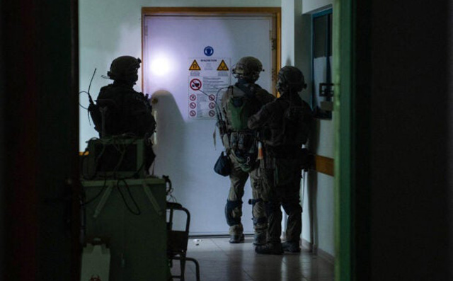

Israel army says body of hostage found near Gaza hospital

20 November 2023
Israeli soldiers near Gaza's largest hospital found the body of a hostage seized by Hamas in their attacks on southern Israel on October 7, the army said Thursday.
A military spokesman identified the slain woman as Yehudit Weiss, saying she had been "murdered" by Hamas in the war-torn Palestinian territory.
"Yehudit was murdered by the terrorists in the Gaza Strip and we didn't manage to reach her in time," spokesman Daniel Hagari told a televised briefing.
Hamas has repeatedly accused Israel of being responsible for the deaths of hostages including Israelis through its intensive bombardment of the Gaza Strip.
Israeli officials say around 240 people were taken hostage during the Hamas attacks which killed some 1,200 people, mostly civilians.
Since then, Hamas government officials say Israel's bombardment and ground offensive have killed more than 11,500 people, also mostly civilians and including thousands of children.
According to the Hostages and Missing Families Forum, Weiss, 65, was kidnapped from her home when her Gaza border kibbutz community of Beeri was stormed by Hamas militants on October 7.
Her husband was killed in the attack, the Israeli group said, adding the couple had five children, four of whom were also in Beeri at the time of the attack and survived it.
Israeli special forces began raiding Al-Shifa hospital early on Wednesday, with an official saying they had found footage relating to hostages on computers at the facility.
Hamas says the operation has severely damaged the hospital, a focal point of Israel's war on Hamas.
Israel claims Hamas operates a base underneath Al-Shifa, a charge the Islamist movement denies.
According to the army statement, "military equipment including Kalashnikov rifles and RPGs" were found in the same location as Weiss's body.
Earlier, an Israeli official said troops were operating inside the sprawling facility, "proceeding one building at a time, searching each floor, all while hundreds of patients and medical staff remain in the complex".
Intelligence materials including equipment "belonging to Hamas" had been found at Al-Shifa, the official said, adding that the items seized had been taken for "further examination and investigation".
An AFP journalist in the hospital said hundreds of soldiers were involved in the operation, encircling buildings and using armoured bulldozers to push through walls.